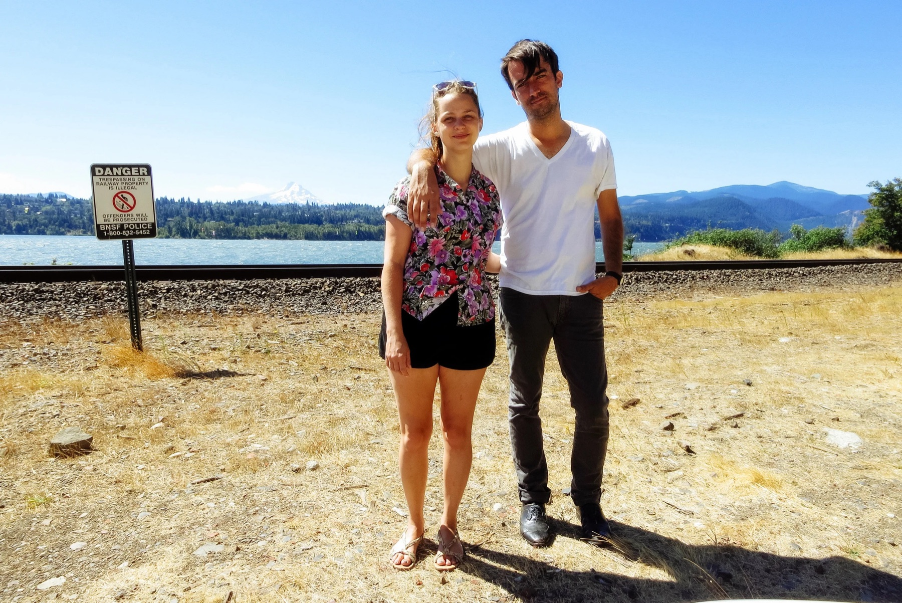

Hello! As you may already know, Ian and Kellyn are getting married! The big day will take place in the hills of West Virginia on Saturday, September 12, 2015. There will be hay bales, kettle corn, BBQ, a dog named Tater, good times, and smooth vibes. Dress code is fancy but with sturdy shoes. Y’all ready?
The I Do’s
3:30 PM – 3:45 PM
The ceremony will be short and sweet. Probably over near the water on the far end of Mary Conrad Park.
Group Picture
3:45 PM – 4:00 PM
Make sure your shirts are tucked in and your hair is in place – we’re taking a group photo of all your smiling faces! Awww – the memories…
Drinkin’ and Dancin’
4:00 PM – 10:00 PM
We’re talkin’ BBQ, beer, blankets, games, dancin’, laughin’, huggin’, and more!